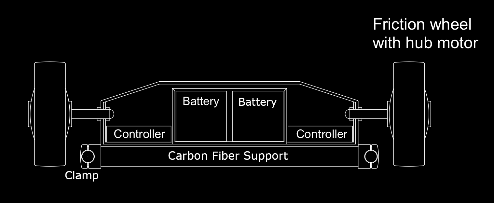
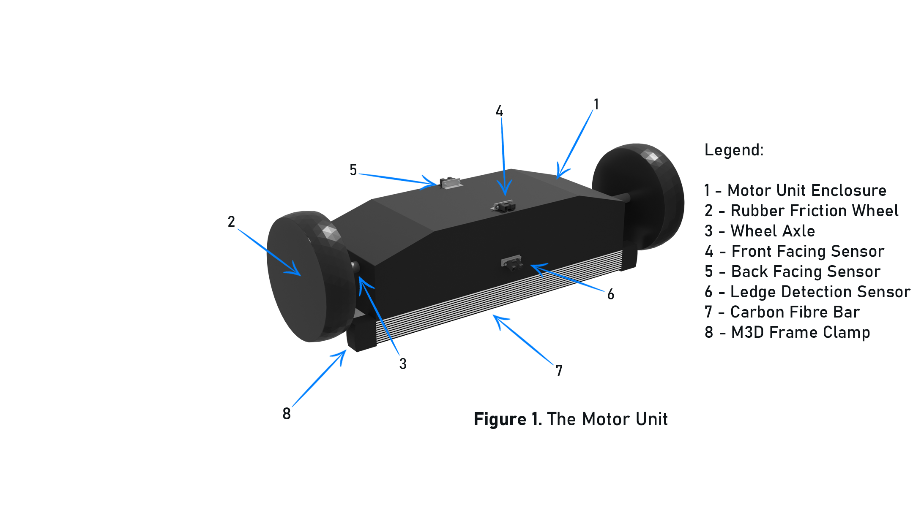
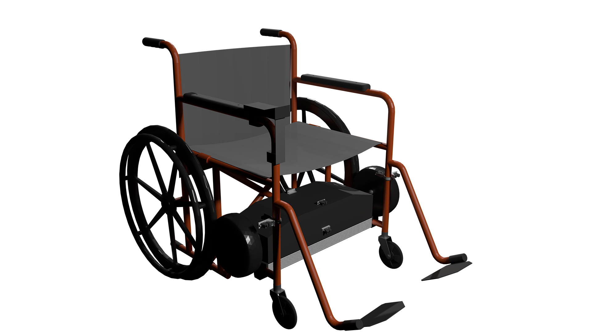
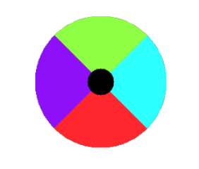
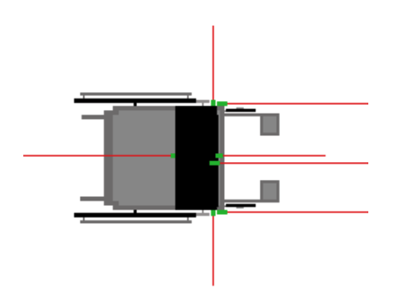
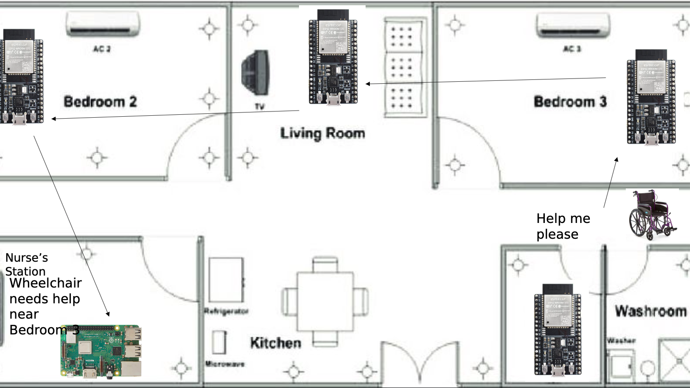
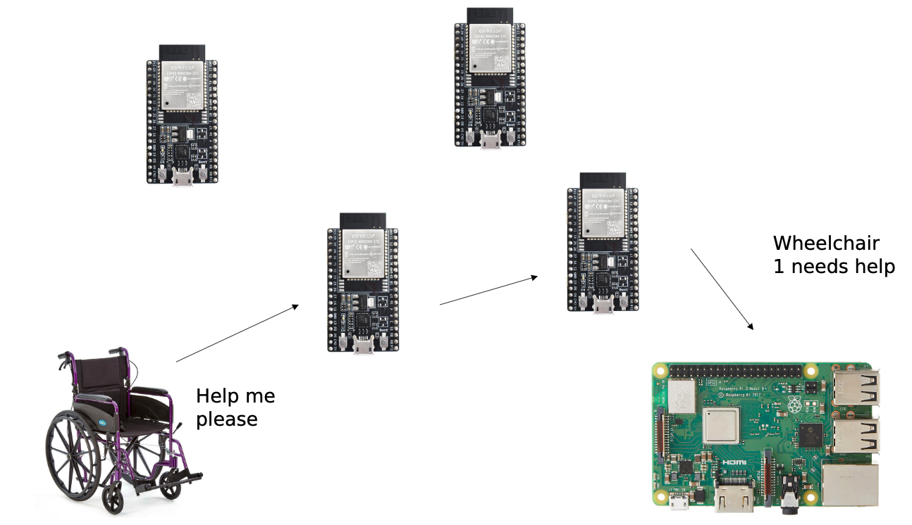

Concept
EC Wheel is used to move people with minimal physical effort and without external assistance by providing an addon that will motorise existing any wheelchairs by powering the wheels.
While EC Wheel can help anyone with limited control on their legs, it will provide much more benefit to the elderly and those with specific disabilities such as partial paralysis.
Functionality
Anatomy
The device compromises of:- Two Controllers
- Two 12V 12AH Mobility Scooter Batteries
- Two 8A rated motors inside the Controllers
The device is clamped on each side of the wheelchair handle via 2 25mm clamps on the left and on the right, connected with a Carbon Fibre Support plate. Below, you may see how the add-on looks like without the outer shell.
The device is also connected with 3 fixed sensors with purpose of stopping the wheelchair from moving when it's close to an object to prevent the user from crashing.
One sensor is shown at 6 from the above image showing that the wheelchair will decelerate and eventually stop when it detects a gap on the way, for example, stairs. A video below is showcasing how the wheelchair will stop.
This is what the wheelchair together with the device will look like.
TrackPad
The user will guide the wheelchair by using the trackpad. The trackpad compromises of 4 side buttons and the radius navigation button:
- On/Off
- Automatic Cruise Control
- Enable/Disable collision detection
- SOS button

The way the user directs the wheelchair, the TrackPad input button is broken down into 4 different radius sectors, each indicating which direction the user wants to turn the wheelchair.
The sectors of the trackpad are illustrated as colours below.
Each colour from the above image indicates the following turning direction (0˚ indicates North):
- Green: 0˚
- Turquoise: 90˚
- Red: 180˚
- Purple: 270˚
By pressing on the appropriate position, the user will turn the wheelchair according to the degrees shown above.
Collision Detection
To ensure the safety of our users, we include 7 collision detection sensors with sole purpose to halt the wheelchair when an object gets close nearby. There is also a front downward facing sensor detecting if the user is about to drive over a ledge. In essence, the sensors cover a radius of 360˚.
Below, we include an illustration of where the sensors are located. Of course, the user has the option to turn off the collision detector by pressing on the yellow button on the trackpad.
SOS Button
Multiple accidents can happen with a wheelchair, including wanting to move to a couch, fall, or other crucial cases such as low batter and urgent help. The request will be sent to the Raspberry Pi hub where the nurses will be able to see the information and act accordingly.
GUI
For the care houses, we provide one Raspberry Pi hub and relays placed around the care house which will allow all the wheelchairs to be connected. This is crucial for the SOS button to work so each of the nurses will receive the signals.
The diagram below, it shows how the wheelchair will communicate to the main Raspberry Pi hub which the nurses are using. As you can see, the signal is sent throw 2 relays before it goes to the main Hub showing which wheelchair requires attention.
